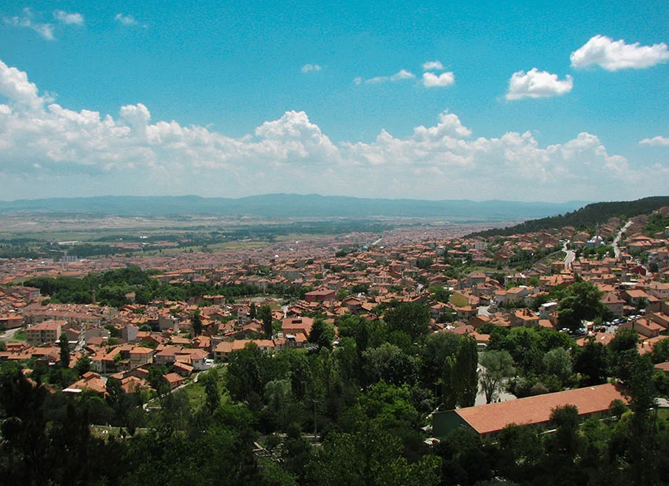
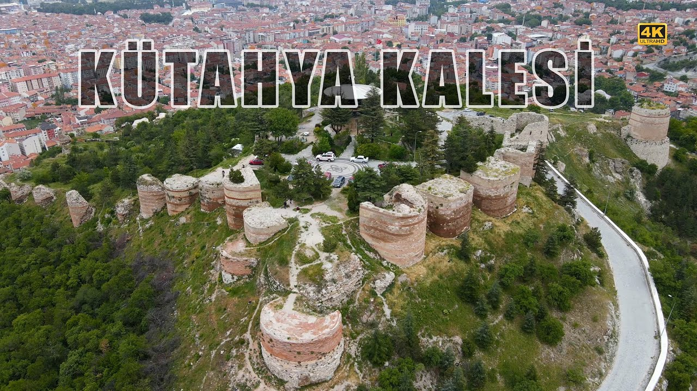
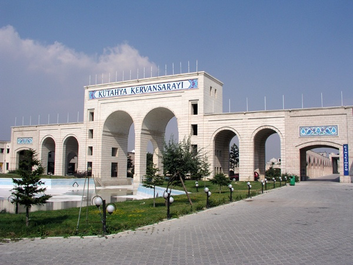
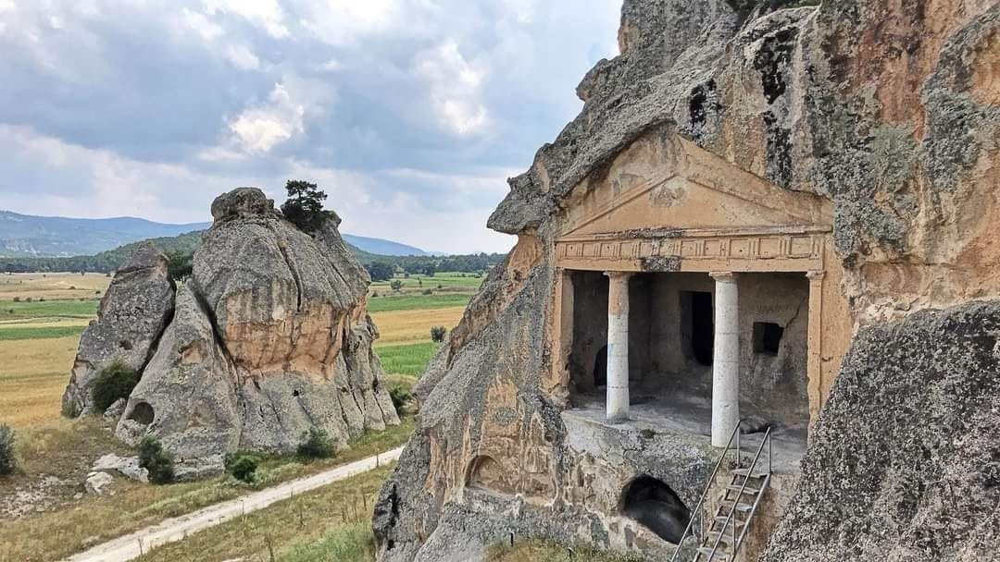

Kütahya
Kütahya (Latince: Cotyaeum), Ege Bölgesi'nde yer alan Kütahya ilinin merkezi olan şehirdir. Yüzyıllık çini ve seramik geleneğiyle dünyada tanınan Kütahya, aynı zamanda Frigya uygarlığının izlerini taşıyan önemli bir tarihi merkezdir.
- Nüfus: 571.475
- Bölge: Ege Bölgesi
- Yüzölçümü: 11.875 km²
- Bilinen özelliği: Çini ve seramik üretimi

Gezilecek Yerler

Kütahya Kalesi
Bizans döneminden kalmıştır. Şehrin en önemli simgelerinden biridir ve ziyaretçilere panoramik şehir manzarası sunar.

Çiniciler Çarşısı
Kütahya'nın en eski ve en çok ziyaret edilen çarşılarından biridir. El yapımı çini ve seramiklerin satıldığı, şehrin en renkli tarihi çarşısıdır.
Ulu Camii
Kütahya'nın en önemli dinî yapılardan biridir. Tarihi ve mimari açısından önemli bir yere sahiptir.

Frigya Vadisi
Antik Frigya uygarlığına ait kaya anıtları ve vadileriyle doğa ve tarihin buluştuğu alan.
Öne Çıkan Yerler
Kütahya Kalesi
Şehrin en yüksek noktasında yer alan kale, Kütahya'nın panoramik manzarasını sunuyor.
Çinili Çarşı
Osmanlı döneminden bu yana süregelen çini geleneğinin yaşatıldığı tarihi çarşı.
Frigya Vadisi
UNESCO Dünya Mirası Geçici Listesi'nde yer alan antik kaya oyma anıtlarıyla dolu vadi.
Ulu Camii
14. yüzyıldan kalma eseriyle Kütahya'nın en önemli dini ve tarihi yapılarından biri.